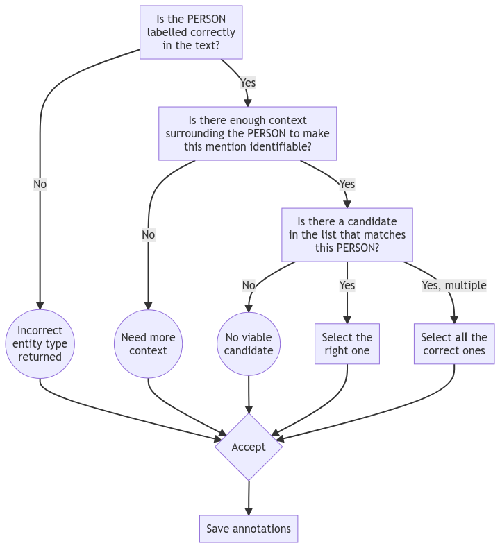
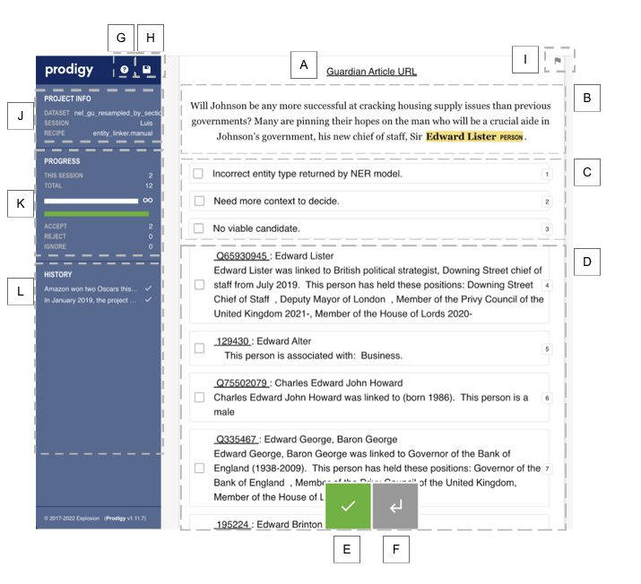

Annotation Guidelines: Entity Linking
The objective of this annotation task is to curate a set of examples (the training data) with [person text mentions <-> entity description] matches we want our entity linking model to generalise from and mimic.
The annotation task is: given a PERSON mentioned in a paragraph from a Guardian article, select all correct entity candidates from a list of possible options shown in the Prodigy User Interface based on close similarity between article paragraph and candidate description.
Annotation task flowchart

Annotators should:
- refer to the guidelines below to ensure consistency;
- consider each new paragraph separately without referring to previously seen information about mentions and candidates. Treat each new paragraph as an independent source of information — this is the same learning process the model will go through;
- select ALL the correct options from the list of candidates which refer to the same person mentioned in the text;
- choose the option “No viable candidate” if they cannot find any correct candidate in the options shown in the UI. This includes cases when there is not enough information about the candidate in the Knowledge Base;
- click Save annotations every ~10 examples and certainly before leaving Prodigy. Failing to do so will result in lost work.
Annotation in depth explanation
- Read the paragraph and make two decisions:
- Decide if the PERSON mentioned is labelled correctly in text. All cases when the entity recognition step has mistakes should be annotated with “Incorrect entity type returned by NER model.”
For example:
Here, the entity Germaine Greer should not include the possessive “s”:
Adrian's mother, Pauline, becomes a 'new woman' after reading Germaine Greer's seminal text.”
Below, Donald Trump is used as an adjective and should also not be annotated as PERSON:
“Alan Cobb, a top operative from the Donald Trump campaign, told the Guardian “our numbers were correct at the time of printing”.”
- If the PERSON mention is correct, decide if there is enough lexical context surrounding the PERSON entity before annotating a candidate from within the available pool of options.
Only annotate a candidate when you are certain that the model is getting relevant lexical context from the paragraph. Please refer to the following example:
a) John Bercow, the Speaker, is making his own statement first.
b) John Bercow is making his own statement first.
Only example a) should be annotated with a candidate because there is context clarifying John Bercow as the Speaker of the House (in the UK Parliament) making a statement. Remember our objective is to train a model that can associate the context provided by the paragraph to the context provided by entity descriptions in the Knowledge Base.
For this particular example, “Speaker” is a good marker for the UK political lexicon shared by politicians like Bercow, whereas in example b) there is no specific contextual information for the model to learn. Example b) should therefore NOT be annotated with candidate options, even if the annotator knows who the person is likely to be, and the option “Need more context” should be selected.
- For any given mention in a paragraph, if no viable candidate is shown in the options, then select the option “No viable candidate”. Remember, this is valid even if the annotator knows from previous examples that the right entity exists in the KB.
- If selecting one or more of the options “No viable candidate”, “Need more context” or “Incorrect entity type”), do not select any KB candidate options (this would produce conflicting information requiring further data processing).
- If there are multiple KB candidates referring to the same mention, select all the correct ones. Be aware that the KB used in this project is a combination of different sources so it might contain duplicate entities with different descriptions. These will be resolved during post-processing.
- Sometimes the paragraph might contain a mention that requires the annotator to seek more context by clicking on the Guardian URL (on top of the page).
For example:
Wolmarans said an injury to Steenkamp's back was not caused by a ricochet bullet, as the state argues, but occurred when she fell backwards onto a wooden magazine rack.
In this case we should annotate the candidate, if there is one in the KB, because there is enough context in the sentence for the model to learn from (despite the annotator not knowing who Steenkamp was before reading the article).
- Some candidate options do not have a very extensive description (e.g. business people and lobbyists). In these cases, only select the candidates which you are sure refer to the person mentioned in the paragraph. If there are no options with enough context, select “No viable candidate”.
- If there are multiple candidates with some having misspelt names, choose the options with the correct spelling. If only misspelt options are available the annotator can accept them.
- Use the flag button (button “I” in the Prodigy User Interface) to mark down cases for future reference, e.g. ambiguous tasks not covered by the annotation guide or data issues requiring further processing.
Glossary
- Entity Linking: in natural language processing, entity linking, also referred to as named-entity linking, or named-entity disambiguation, is the task of assigning a unique identity to entities (such as individuals, locations, or companies) mentioned in text. For example, given the phrase Paris is the capital of France, the idea is to determine that Paris refers to the city of Paris and not to Paris Hilton or any other entity that could be referred to as Paris.
- Annotate: manually curate data to produce a training dataset containing many examples. Our particular annotation task is: given a mention in a paragraph from a Guardian article, select any viable candidates from a list of possible options. Alternatively, if no candidate can be selected, select the option reflecting the reason why.
- Knowledge Base (KB): a database containing entities and information about them. In the current version of the project, we created a bespoke KB by combining data from two pre-existing KBs: Open Sanctions and LilSis. In this iteration we are only considering PERSON entities. PERSON entities have a unique KB ID, a name, and a description. Please be aware that there are many cases of entities with different IDs referring to the same person.
- Training Dataset: a large dataset used to teach a machine learning model. For our Entity Linking model the training dataset should be formed of Guardian article paragraphs with at least one PERSON mention manually annotated with the right entity ID(s) found in the KB. By showing many correctly paired examples of sentences with similar lexical context, i.e. (paragraph + PERSON mention) paired with (KB-entity + KB description), the model will be able to learn to do this task automatically.
- Paragraph: the extract from a Guardian article that shows up at the top of the Prodigy interface. You can consult the original article to infer more context about the paragraph by using the URL provided in the interface.
- Entity: a word or phrase recognised by a Named Entity Recognition model as being a reference to a PERSON.
- Mention: a PERSON entity tagged within a paragraph. There will be some cases of mentions which are wrongly detected by the model (e.g. "Brexit" can sometimes be recognised as a person). These are expected as the models are not 100% accurate. They will not be used in the training dataset but there is an option to annotate these cases for future reference (“Incorrect entity type returned by NER model”).
- Option: the available annotations per mention. There will be up to 13 options per mention. The first 3 options indicate entity model issues, lack of sufficient context for the task, or lack of a candidate. The remaining (up to) 10 options will be candidates retrieved from the KB based on name similarity.
Prodigy User Interface
Prodigy is the tool we will be using to annotate our dataset. Below is an example of the user interface for an annotation task. Please refer to the glossary at the end of the guidelines for more information on the terms used in this document.
- Hyperlink to Guardian article containing the paragraph extract. Click to open the article in a new tab.
- Paragraph from Guardian article. Each paragraph will contain one PERSON entity. Please note the same paragraph may be surfaced more than once with a different entity highlighted in turn.
- [& D] Candidate annotation options. The annotator can use keyboard shortcuts as indicated to select options. The first three options [1-3] should be used to annotate the reason a candidate cannot be selected for the task where applicable.
- The remaining options [4 - 13] refer to candidates retrieved from the knowledge base for the PERSON entity in the paragraph. This is based on a “fuzzy” matching logic.
- Accept button. Click the accept button after selecting all correct annotation options for the task, or use the keyboard shortcut 'a', to move to the next task. NB: the annotations will not be saved onto the server until the save button (H) is pressed!
- Return button. Allows the user to go back to previous annotations where required. This is also possible via (L).
- Access to Annotation Guidelines.
- Save button (Command + S). The annotator's best friend. Please save your work, at least every 10 annotation tasks. If the connection is severed at any point all non saved annotations will be lost.
- Flag button. May be used to mark cases not covered by the annotation guide for future reference.
- Session information. Please confirm the Session field contains the annotator’s name.
- Progress stats. Keeps track of the number of annotation tasks completed.
- History. Shows the most recent annotation tasks. Can be used instead of the return button (F) to directly navigate to past tasks.
